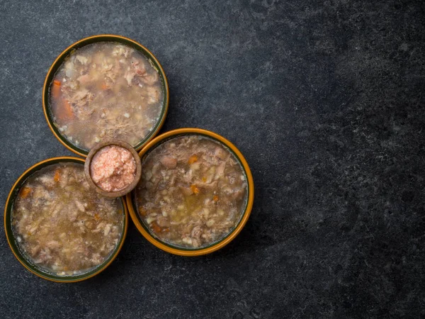

Holodets

Recipe
Ingredients
- 2 lbs pig, cow or chicken feet
- 1 lb boneless meat
- 1 onion, peeled
- 2 tsp salt
- 1/8 tsp pepper
- 2 bay leaves
Steps
- Put all the meat, whole onion, salt and pepper in a large pot. Add enough water to completely cover the meat plus an extra inch of water on top of the meat.
- Bring water to a boil and skim off the foam.
- Reduce heat to simmer, cover and simmer for 3 hours.
- Add the bay leaves and simmer for 20 minutes.
- Remove all the meat from the pot.
- Discard the onion and bay leaves.
- Pull the meat away from the bones and discard the bones.
- Chop all the meat and put on the bottom of an 8×12 dish (you can use Pyrex dish).
- Strain the cooking liquid through the cheesecloth.
- Pour the liquid over the chopped meat.
- Refrigerate the dish with Holodets overnight.
- Cut Holodets into squares and serve with horseradish or mustard.